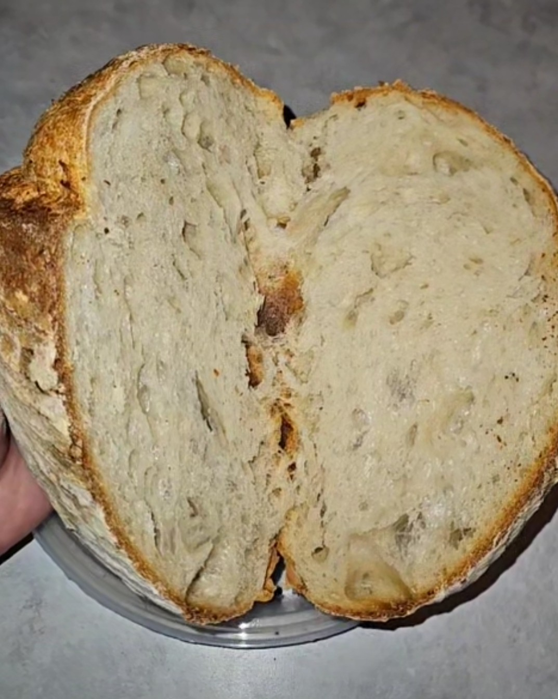
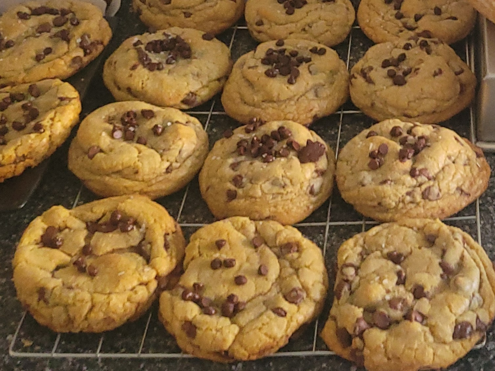
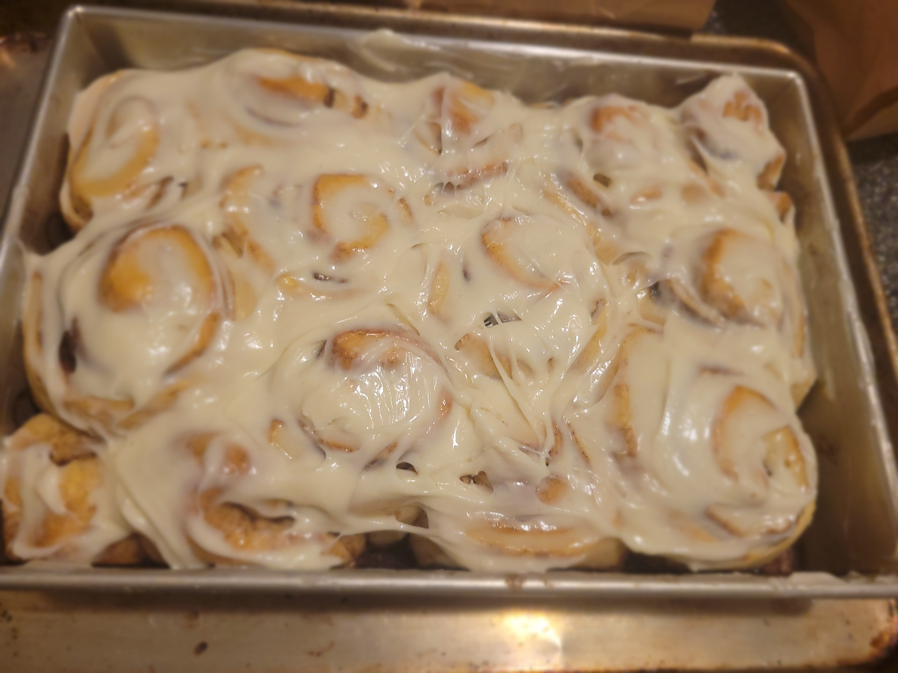

Recipes & Techniques.
A growing collection of recipes, baker's notes, and hands-on techniques from our kitchen. Written for home bakers, readable on a flour-dusted phone.

The Beginner's Classic Tavern Boule
Our foundational recipe. Four ingredients, 36 hours, one beautiful loaf. The perfect place to start your sourdough journey.

Mastering the Open Crumb
High-hydration handling, proper gluten development, and the shaping techniques that lead to that coveted airy interior.

Starting Your Sourdough Starter
Day-by-day: how to build a wild yeast starter from scratch using just flour and water. Troubleshooting tips included.

Hearthstone Cookie
Brown butter, sea salt, and chocolate chip. Each cookie is roughly 40 - 50g(for the tavern style cookie we are known for, double the dough in each cookie to 100g & cook 2 minutes-Sir Sourdough). Rested overnight for a chewier center and deeper flavor.

Giant Sourdough Cinnamon Rolls
Enriched sourdough dough, brown butter cinnamon sugar fill, sweet & tangy glaze. Proofed overnight.
New recipes, every Thursday.
Join the weekly bake sheet for a seasonal recipe, baker's notes, and a heads-up on what's coming out of the oven this weekend.